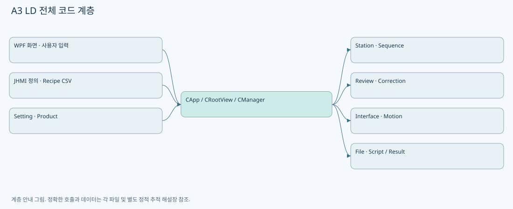

A3 LD Code Ref
master · 0219666f9053b907d96d7e0aa7d0c6c1be3a73d4
원본은 보존합니다. 구문 해설 · 직접 추적한 상세 해설 · 실행 검증을 구분합니다.
2289 파일 · 16543 멤버 · 43603 호출 구문
파일·함수 검색 바로가기 ↓ · Offline Studio 첨부 안내

먼저 읽는 상세 해설
파일 찾기
Offline Studio 첨부 안내 · Markdown 안내 · 기준/범위 manifest